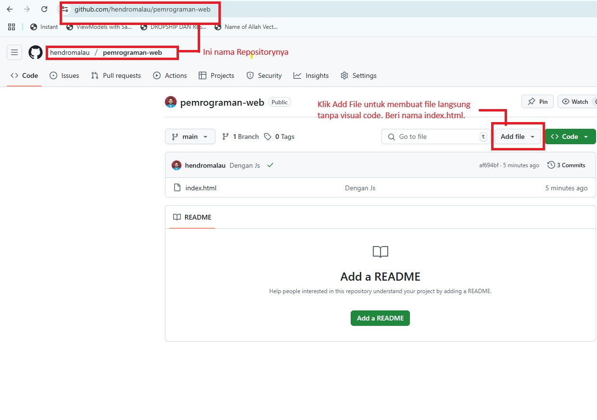

GitHub Pages adalah layanan gratis dari GitHub untuk hosting website statis. Sangat cocok untuk portofolio, blog, dokumentasi, atau projek web sederhana.
Kunjungi https://github.com dan daftar akun gratis.
my-website)Siapkan file seperti index.html, style.css, dsb. Lalu upload:
git clone https://github.com/username/my-website.git
Tutorial Hosting Gratis di GitHub Pages
1. Apa itu GitHub Pages?
GitHub Pages adalah layanan gratis dari GitHub untuk hosting website statis. Sangat cocok untuk portofolio, blog, dokumentasi, atau projek web sederhana.
2. Syarat Hosting di GitHub Pages
- Punya akun GitHub
- Website dalam format statis (HTML, CSS, JS)
- Koneksi internet untuk upload ke GitHub
3. Langkah-langkah Hosting
a. Buat Akun GitHub
Kunjungi https://github.com dan daftar akun gratis.
b. Buat Repository Baru
- Login ke GitHub
- Klik tombol New atau + → pilih New repository
- Isi nama repo (misalnya
my-website)
- Pilih Public
- Centang “Add a README file” (opsional)
- Klik Create repository
c. Upload File Website
Siapkan file seperti index.html, style.css, dsb. Lalu upload:
- Via GitHub Web: klik Add file → Upload files
- Atau via Git:
git clone https://github.com/username/my-website.git
cd my-website
# tambahkan file
git add .
git commit -m "Upload website"
git push origin main
d. Aktifkan GitHub Pages
- Masuk ke repo kamu
- Klik tab Settings
- Scroll ke bawah, pilih Pages
- Pilih source: main dan folder /(root)
- Klik Save
Tunggu beberapa detik, website kamu akan tersedia di:
https://username.github.io/nama-repo/
4. Tips Tambahan
- Pastikan file utama bernama
index.html
- Gunakan folder
/ saat memilih source Pages
- Bisa dipakai untuk React, Vue, atau proyek static build
- Custom domain? Tambahkan file
CNAME
5. FAQ (Pertanyaan Umum)
🔹 Bagaimana cara menambahkan file index.html langsung tanpa VS Code?
Buka repository kamu, Klik Add file → Create new file di GitHub, beri nama index.html, lalu isi konten HTML-nya. Setelah itu klik Commit new file.

🔹 Apakah GitHub Pages mendukung JavaScript?
Ya! Kamu bisa menambahkan file .js dan menjalankan JavaScript seperti biasa. GitHub Pages mendukung semua kode statis (HTML, CSS, JS).
🔹 Kenapa opsi Source di GitHub Pages tidak muncul?
Pastikan repository kamu diset ke public. GitHub Pages tidak bisa diaktifkan pada repository privat kecuali kamu pakai GitHub Pro.
🔹 Bagaimana cara upload project dari VS Code ke GitHub?
Buka terminal di VS Code dan jalankan perintah git init, git add ., git commit, lalu git push ke repository GitHub kamu. Jangan lupa hubungkan remote dengan perintah git remote add origin.
6. Penutup
Dengan GitHub Pages, kamu bisa membuat website profesional tanpa biaya hosting. Mudah digunakan, cepat, dan cocok untuk siapa saja.
d. Aktifkan GitHub Pages
- Masuk ke repo kamu
- Klik tab Settings
- Scroll ke bawah, pilih Pages
- Pilih source: main dan folder /(root)
- Klik Save
Tunggu beberapa detik, website kamu akan tersedia di:
https://username.github.io/nama-repo/
index.html/ saat memilih source PagesCNAMEindex.html langsung tanpa VS Code?
Buka repository kamu, Klik Add file → Create new file di GitHub, beri nama index.html, lalu isi konten HTML-nya. Setelah itu klik Commit new file.
Ya! Kamu bisa menambahkan file .js dan menjalankan JavaScript seperti biasa. GitHub Pages mendukung semua kode statis (HTML, CSS, JS).
Pastikan repository kamu diset ke public. GitHub Pages tidak bisa diaktifkan pada repository privat kecuali kamu pakai GitHub Pro.
Buka terminal di VS Code dan jalankan perintah git init, git add ., git commit, lalu git push ke repository GitHub kamu. Jangan lupa hubungkan remote dengan perintah git remote add origin.
Dengan GitHub Pages, kamu bisa membuat website profesional tanpa biaya hosting. Mudah digunakan, cepat, dan cocok untuk siapa saja.